Joan Melendez Misner is a space engineer, science communicator, and public speaker dedicated to transforming complex aerospace systems into clear, accessible insights. She has contributed to science missions that explore our own planet, other planets, and even asteroids, working across mission integration, launch operations, and systems engineering to help turn bold concepts into flight-ready reality.
With experience supporting high-visibility programs at Kennedy Space Center and collaborating across multidisciplinary technical teams, Joan operates at the intersection of engineering excellence and strategic execution. Joan received a dual bachelor's degree in Chemical Engineering and Chemistry from the University of Maryland, and a master's degree in Systems Engineering from Naval Postgraduate School.
Prior to working for NASA, Joan worked for Blue Origin on the New Glenn rocket, and Naval Air Systems Command on jet engines, fuel systems, and biofuels research and qualification. She has worked with many commercial space and aviation companies throughout her career, establishing herself as a trusted professional voice in the industry.
Beyond the launch pad, she is the founder of YourFemaleEngineer, where she breaks down intricate space topics for broad audiences, advocates for greater representation in STEM, and mentors the next generation of innovators. Her work blends technical rigor with human-centered storytelling, inspiring curiosity and expanding access to space for underrepresented communities.
As a first-generation college graduate, she strives to increase representation in underrepresented communities, and encourages them to pursue STEM careers through social media and non-profits.
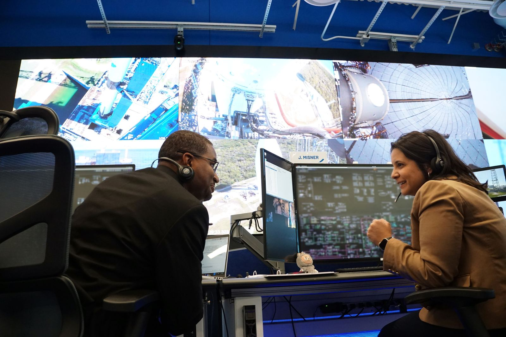
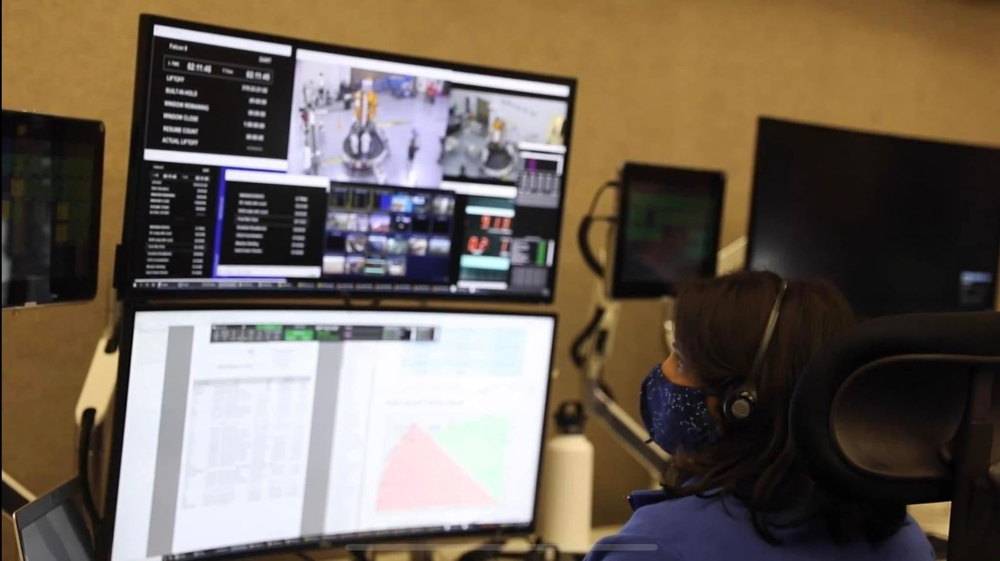
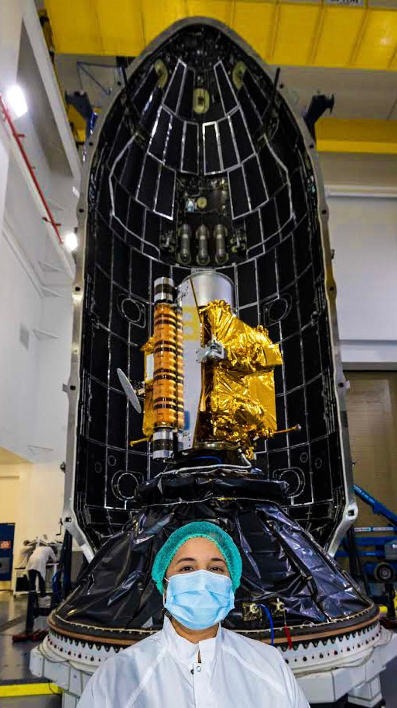
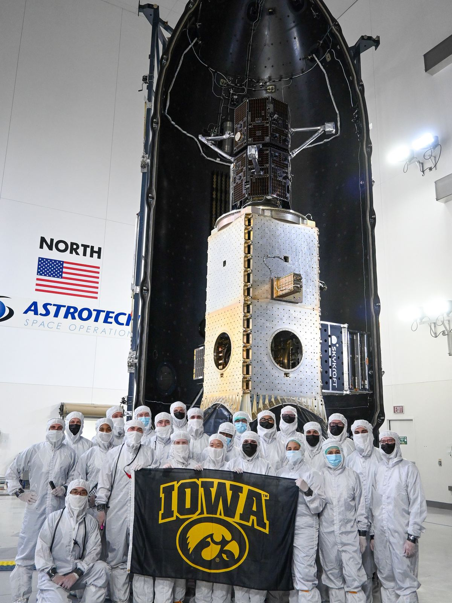
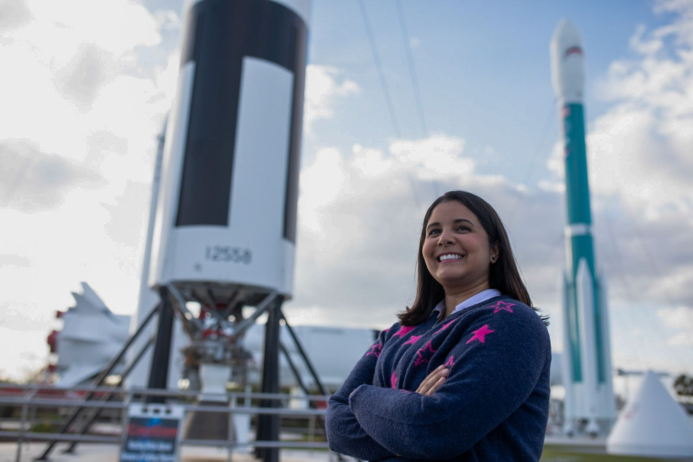
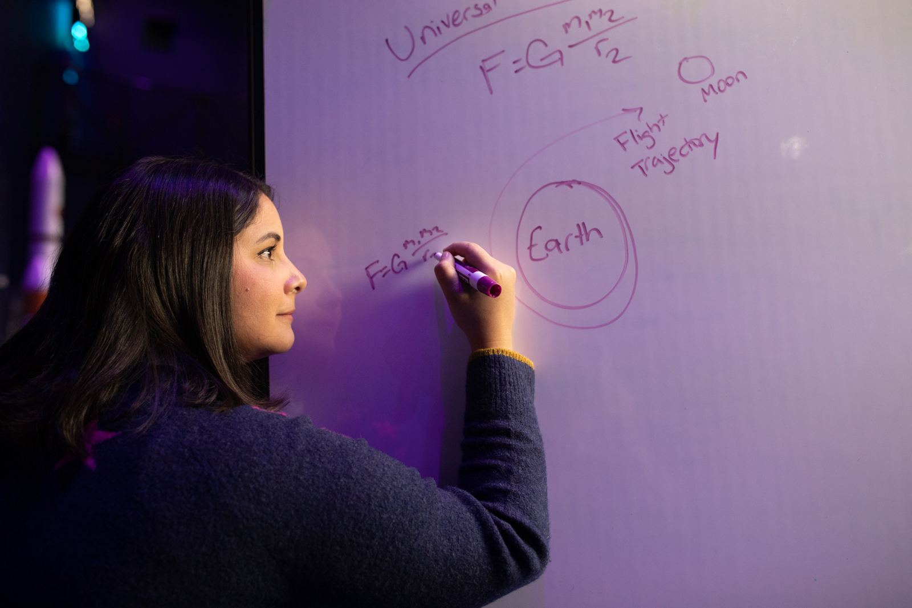
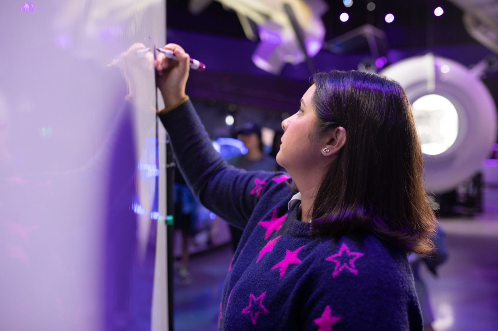
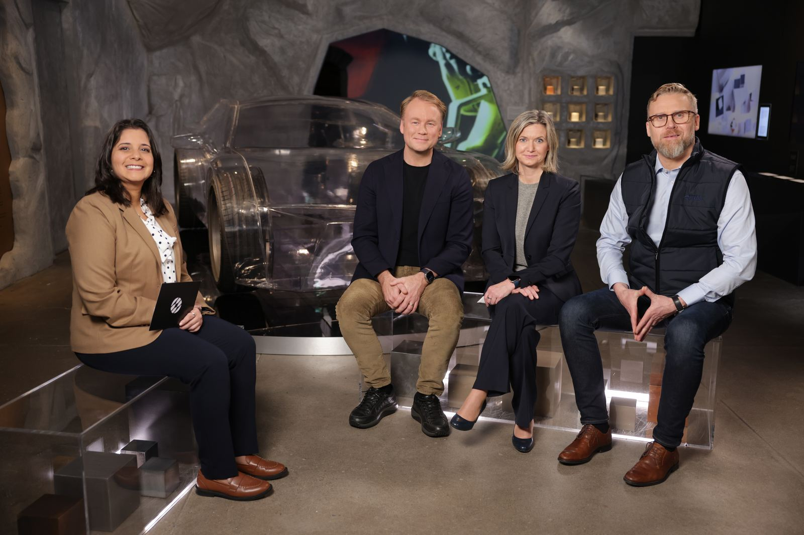
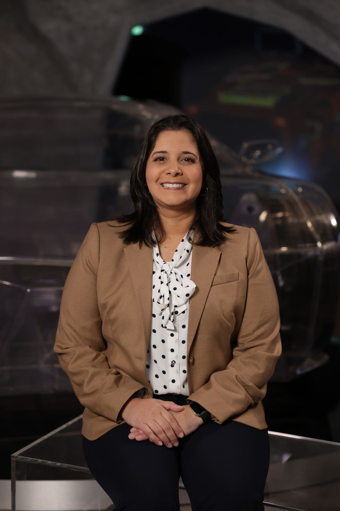
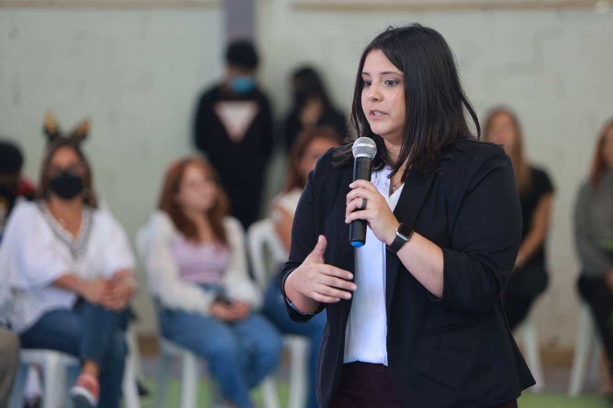

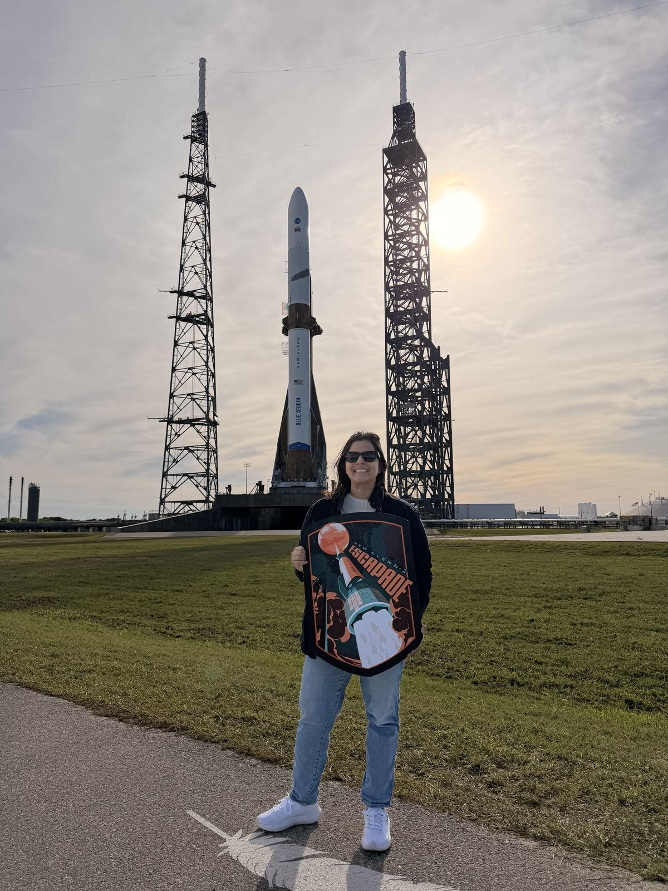